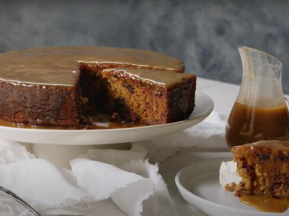

Home
Sticky Date Pudding Recipe

Image by
delicious.
Sticky Date Pudding
You can't beat a warm pudding when cool weather approaches, and this easy
sticky date pudding recipe is one you'll never tire of. Get your spoon at
the ready and prepare to dig into soft, pillowy pudding oozing with warm,
rich caramel sauce. A perfect dessert for winter, this deliciously easy
sticky date pudding will be your new staple.
Ingredients
Pudding
- 250g pitted dates, chopped
- 1 teaspoon bicarbonate of soda
- 1 ½ cups boiling water
- 125g butter, softened
- 1 cup Woolworths Essentials Brown Sugar
- 1 teaspoon vanilla extract
- 2 eggs
- 1 ¾ cups White Wings Self-Raising Flour, sifted
Caramel Sauce
- 1 cup brown sugar
- 300ml thickened cream
- ½ teaspoon vanilla extract
- 60g butter
Steps
-
Preheat oven to 180°C. Grease and line the base of a 7cm deep, 22cm
(base) cake pan.
-
Place dates and bicarbonate of soda into a bowl. Pour over boiling
water. Allow to stand for 20 minutes.
-
Using an electric mixer, beat butter, sugar and vanilla until pale and
creamy. Add eggs, 1 at a time, beating well after each addition. Using a
large metal spoon, fold through date mixture and flour until well
combined.
-
Spoon mixture into prepared cake pan. Bake for 35 to 40 minutes or until
a skewer inserted into the centre comes out clean. Turn onto a plate.
-
Make sauce Combine all ingredients in a saucepan over medium heat. Cook,
stirring often, until sauce comes to the boil. Reduce heat to
medium-low. Simmer for 2 minutes.
-
Pierce pudding all over with a skewer. Pour ½ cup of warm sauce
over warm pudding. Stand for 10 minutes. Cut into wedges. Serve with
remaining sauce.
Copyright, all rights reserved to the respective copyright owners:
Recipe content on this page has been copied from the "Sticky Date
Pudding" recipe sourced from
delicious.
The content of this page is used for educational purposes of building a
recipes website for
The Odin Project.